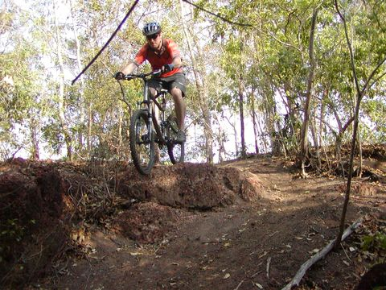

Videos from quad, hexcopters and helmets
2010
I have posted videos filmed from the YF680 hexcopter and TBS Discovery Pro using a GoPro. Enjoy...
SeanMac.Net - videos and photos served locally:
YouTube - Choose HD option from Settings Menu - Select 720p or 1080p:
Picture of the Day
Friday, December 25th, 2010
Christmas at Mum's in Georgetown, Tasmanina. Sam joined us for about a week for Christmas and touring Tasmania.
Picture of the Day
Tuesday, November 16th, 2010
Mountain Bike Jump
Tuesday, June 23th, 2010
Found these photos from earlier in the year. This drop-off is at Lee Point Coastal Reserve.

Eyes are better
Wednesday, June 16th, 2010
Eye's back to normal. Strange that I get this every few weeks. Vision is fine, but the scratching feeling comes and goes.
Eyes are hurting again
Friday, June 4th, 2010
Not sure what is going on with my eye again. It is the same one that got scratched a few months ago. I have to put some more eyedrops in.
Targa Tasmiania - 2010!
Thursday, April 27th, 2010
The Targa was a big event this year with over 400 entries. Cars from all over Australia and some from overseas participated.
The streets of Georgetown, Northern Tasmaina are turned into a public road racetrack.
Penny with a Porche 356B Carrera 2000GT. Driver:Klaus Bischof(Germany) Navigotor:Kevin Nicholls(VIC)
Sean and Wendy
1936 Delage D6 70 Le Mans. Driver:John Lawson(VIC) Navigator:Andrew Lawson(VIC)
1958 Austin Healey Sprite. Driver:Peter Smith(NSW) Navigator:Ashley Smith(NSW)
2009 Nissan R35 GTR. Driver:Tony Quinn(QLD) Navigator:Naomi Tillet((SA)
 2008 Lamborghini Gallardo Superleggera. Driver:Kevin Weeks(SA) Navigator:TBA.
2008 Lamborghini Gallardo Superleggera. Driver:Kevin Weeks(SA) Navigator:TBA.
2008 Lamborghini Gallardo Superleggera. Driver:Jason White(TAS) Navigator:John White(TAS)
1974 Ford Falcon XB. Driver:Arthur Kalmeris(ACT) Navigator:Karla O'Brien(ACT)
Targa Tasmiania - 2010 posting soon
Tuesday, May 11th, 2010
I will post the photos from the start of the Targa in Georgetown Northern Tasmania soon.
Apple's 4th-generation iPhone revealed
Tuesday, April 20, 2010
By Nilay Patel posted Apr 19th 2010 10:47AM
Well, we told you so. The fourth-generation iPhone prototype that leaked its way out into the world over the weekend has found its way to Gizmodo, and they've examined it exhaustively enough to prove that it's the real thing. Not only does it show up in iTunes, Xcode, and System Profiler, but it has different product identifiers than the 3G or 3GS, and it's packed with Apple-labeled components inside. Unfortunately, they couldn't get it to boot out of recovery mode, but a number of new features and changes are evident just by holding it. Obviously, it's thinner than the 3GS, with smaller internal components and a larger battery inside the metal frame. There's also a front-facing camera, a larger and better camera with a flash on the back, a higher-res display that's slightly smaller than the current models, a second mic for noise cancellation, and that new back, which Giz seems a bit confused about but we're fairly sure is glass or ceramic. It's also three grams heavier than a 3GS, with a 16 percent larger battery and the same new MicroSIM slot used in the iPad.
We're also told the phone was found running iPhone OS 4.0 but that it was remotely killed before Giz could actually see it, and that they can't get it to boot because it requires a bespoke build of the OS. We're assuming Apple's hot on the trail of this thing, so hit the source link while you can and check a couple more pics after the break.
SpokesNT, Thredbo, Canberra Bike Trip
Tuesday, March 22, 2010
Some of the good people from SpokesNT went to Thredbo for a bit of downhilling on the 10 March 2010. Beats the 55sec longest run we have in Darwin!Eyes are better now... Checked and confirmed.
Tuesday, February 23, 2010
I have been to the optomertrist and they confirmed that there is no sign of the scratching on the eye. All is well that ends well.
Eyes are better now...
Thursday, February 18, 2010
I have been suffering with a scratched eye for since Saturday after scratching the bottom of my left eye on a plant in the garden. This seems to have subsided now and with a trip to the optomertrist on Monday, I expect to make a full recovery.
Go to Top of Page